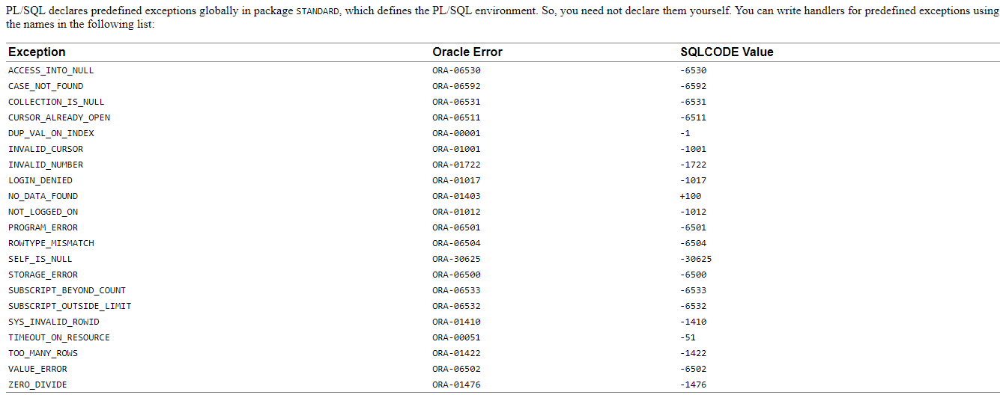
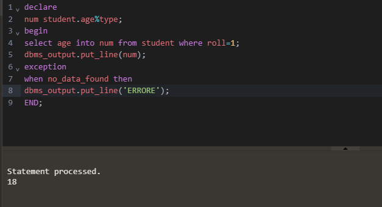

Some of the Predefined-Exceptions:-

Examples:-

2. User defined Exceptions:-
In addition to the predefined exceptions, you can also define your own exceptions Unlike predefined exceptions, user-defined exceptions are declared and defined by the ser User-defined exceptions are declared in the declaration section of PL/SQL block with their type as EXCEPTION. They must be raised explicitly using the RA statement unlike pre defined exceptions that are raised implicitly
Steps to be followed to use User-defined Exceptions :-
(i)They should be explicitly declared in the Declaration section.
(Declaring an Exception)
(ii) They should be explicitly raised in the Execution section
(Raising an Exception)
(iii) They should be handled by referencing the user-defined exception name in the Exception section.
(Handling an Exception)
{i}Declaring Exeptions
User-defined exceptions can be declared only in the declarative section of a PL/SQL block .
Syntax:-
{ii}Raising an Exeptions
A user-defined exception is raised explicitly, by issuing the RAISE statement within the executable section of PL/SQL block
Syntax:-
RAISE exception-identifier;
{iii}Handling an Exeptions
Once a user-defined exception is raised in the executable section of PL/SQL block, then
it should be handled by referencing the user-defined exception name in the exception section
Syntax:-
Begin
......
. . . .
EXCEPTION WHEN < EXCEPTION-IDENTIFIER >THEN
statement;